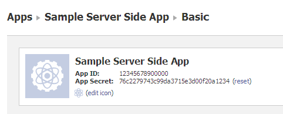

(Quick Reference)
Facebook Authentication - Reference Documentation
Authors: Igor Artamonov
Version: 0.13
1 Introduction
Grails plugin for Facebook Authentication, as extension to Grails Spring Security Core plugin.
Introduction
Sources:
https://github.com/splix/grails-spring-security-facebookRequirements:
- grails 2.0+
- spring-security-core plugin 1.2.7.2
Examples:
Support
2 Intallation
2.1 Installation
Install plugin
Basically it's just adding dependency into `BuildConfig.groovy`:
plugins {
compile "org.grails.plugins:spring-security-facebook:0.11"
}and calling (optionaly) configuration wizards by:
grails s2-quickstart //configure Spring Security Core
grails s2-init-facebook //configure Spring Security Facebook
Instead of last step you can edit `Config.groovy` manually, you need to add Facebook App key/secret there,
and other configuration options if you need (see
Configuration section)
Follow
Basic Usage guide for next steps.
2.2 Upgrade Notice
Upgrading from version 0.9
Since version 0.10 plugin have started to use Server Side authentication by default, instead of
Client Side authentication (based on Facebook JS SDK) that was default implementation for version 0.9 and earlier.
If you want to continue using Client Side authentication, you should add following configuration into
Config.groovy:
grails.plugins.springsecurity.facebook.filter.type='transparent,cookieDirect'
See
Filters guide for details.
3 Usage
3.1 Basic Usage
Example app
You can take a look at
Example Application, it's very
basic app, that have only one page, with 'Facebook Connect' button. Just clone it, put your FB App credentials, and play with it.
How to add Facebook Authentication into your existing application
Initial plugin config
Domain Class
Create domain class for your facebook user:
class FacebookUser {
long uid
String accessToken
Date accessTokenExpires static belongsTo = [user: User] //connected to main Spring Security domain static constraints = {
uid unique: true
}
}At
Config.groovy setup full name (including package name, if used) of just created Facebook user domain, like:
grails.plugins.springsecurity.facebook.domain.classname='FacebookUser'
Add FB App credentials
You should create a Facebook App and copy App ID and Secret:

into
Config.groovy:
grails.plugins.springsecurity.facebook.appId=12345678900000
grails.plugins.springsecurity.facebook.secret=76c2279743c99da3715e3d00f29a1234
PS it's just example, you should use your own `appId` and `secret`.
Add Facebook Connect button
There is special taglib (
<facebookAuth:) that can be used at your view (any GSP page) to add Facebook Connect button.
Following code displays connect button for not authorized user, or show a welcome message to logged in user:
<sec:ifNotGranted roles="ROLE_USER">
<facebookAuth:connect />
</sec:ifNotGranted>
<sec:ifAllGranted roles="ROLE_USER">
Welcome <sec:username/>! (<g:link uri="/j_spring_security_logout">Logout</g:link>)
</sec:ifAllGranted>
Run
That's it! Run your application, and test that everything is working.
3.2 Filters
How it works
Plugin is based on Spring Security and uses web filters for authorization, for more details see
Spring Security docsAvailable filters
There are 4 types of filter:
- FacebookAuthRedirectFilter - server-side authorization (used by default)
- FacebookAuthCookieTransparentFilter - automatic client-side authorization
- FacebookAuthCookieDirectFilter - manual client-side authorization
- FacebookAuthJsonFilter - for AJAX or non-browser clients (Android/iOS/etc)
Server-Side authentication (FacebookAuthRedirectFilter)
It's a standard
Login for Server-side Apps.
After clicking on 'connect button' user gets redirected to special Facebook page, for authentication, and then
redirected back to your app.
Client-Side authentication
Transparent cookie based authorization (FacebookAuthCookieTransparentFilter)
Based on
Facebook Javascript SDK authorization. On
client side it makes Facebook authorization and put Facebook Cookie (it's made by Facebook Javascript,
you don't need anything special)
After successful authorization on client side, the browser should reload current page. Or open any other page.
This filter will
process each request, and if it sees valid Facebook cookie, it makes authorization for
current user. If it's a new user, it creates a new one for application, with provided Facebook credentials.
It's per-request authorization. That means that this filter will try to authorize user on each page request.
Manual cookie based authentication (FacebookAuthCookieDirectFilter)
Based on
Facebook Javascript SDK authorization. On
client side it makes Facebook authorization and put Facebook Cookie (it's made by Facebook Javascript,
you don't need anything special)
Same as FacebookAuthCookieTransparentFilter, it parse Facebook cookie, but only for specified url. Like
username/password filter from spring-security-core or similar. After successful authorization it
can redirect user to specified url.
JSON or Android/iOS/desktop authorization (FacebookAuthJsonFilter)
Client should send Access Token or Signed Request as parameter, and will get authorization response as JSON
See
filter docsFilter configuration
You can use config parameter
grails.plugins.springsecurity.facebook.filter.type to configure which filters
you want to use in your application.
It's not a Spring Security configuration, not a configuration for Spring filters. Just a
extra configuration, that used only by this plugin.
By default it uses only one 'redirect' filter:
grails.plugins.springsecurity.facebook.filter.type='redirect'
You can use more that one filter at same time:
grails.plugins.springsecurity.facebook.filter.type='transparent,cookieDirect'
Value types:
redirect - use standard server side authorizationtransparent - use transparent cookie based authorizationcookieDirect - use manual cookie based authorizationjson - use JSON authorization
3.3 Server Side Authentication
It's the `FacebookAuthRedirectFilter`, enabled by default.
It's preferred and a standard
Login for Server-side Apps.
After clicking on 'connect button' user gets redirected to special Facebook page, for authentication, and then
redirected back to your app.
Note, that user going to see Facebook Authentication screen only in first time (if not security modification was made).
Next time user should be redirected back from Facebook to your application, without showing any Facebook screen.
How to process failed login
When user declines Facebook Authentication (click Cancel, for example), you'll '401 Authentication Failed' by default.
It's default configuration of Spring Security failure handler, but for most cases it's not what you really want.
To handle this situation you should create your own Failure Handler, a bean implementing
org.springframework.security.web.authentication.AuthenticationFailureHandler. If you just need to
show a page (a GSP view), you can use standard
SimpleUrlAuthenticationFailureHandler, that could redirect
failed authentication to specified URL.
For example you can create bean at
resources.groovy:
import org.springframework.security.web.authentication.SimpleUrlAuthenticationFailureHandler// Place your Spring DSL code here
beans = { redirectFailureHandlerExample(SimpleUrlAuthenticationFailureHandler) {
defaultFailureUrl = '/failed' //redirect to this URL when authentication fails
}}and setup this bean for 'redirect' filter at
Config.groovy:
grails.plugins.springsecurity.facebook.filter.redirect.failureHandler='redirectFailureHandlerExample'
Same way for configuring Success Handler.
3.4 Client Side Authentication
Based on
Facebook Javascript SDK authorization. Useful
when you need to use FB Javascript SDK on client side.
And there are two ways:
- try authenticate user on each request, to any page - it's
transparent filter
- authenticate only when user redirected to specified page, like a standard username/password authentication - it's
cookieDirect filter
If you're using first way (
transparent filter), your user will automatically authenticated whenever he has
Facebook cookie. Btw, don't forget that you should
reload current page after you have successfully authenticated user
on client side. Like:
<facebookAuth:init>
FB.Event.subscribe('auth.login', function() {
window.location.reload();
});
</facebookAuth:init>If you're using second way (
cookieDirect filter), you could configure URL that will be used for authentication at
Config.groovy:
grails.plugins.springsecurity.facebook.filter.processUrl = '/j_spring_security_facebook_check' //it's default value
And after authorization redirect user to /j_spring_security_facebook_check, like:
<facebookAuth:init>
FB.Event.subscribe('auth.login', function() {
window.location.href = '/j_spring_security_facebook_check'
});
</facebookAuth:init><g:javascript>
$('#fbloginbutton').click(function() {
FB.login();
});
</g:javascript>3.5 Json Authentication
Filter 'FacebookAuthJsonFilter' accepts Facebook Access Token or Signed Request as parameter, and responds
with JSON to authorization requests. It's useful if you an external client for your Grails application, it
could be Android or iOS application, or Desktop application, or just AJAX client.
How it works:
> GET /j_spring_security_facebook_json?access_token=<ACCESS_TOKEN>
For successful authorization you'll get:
< HTTP/1.1 200 OK
< Content-Type: application/json;charset=UTF-8
<
{
"authenticated": true,
"uid": 12345612345, # Facebook User Id
"roles":[
"ROLE_FACEBOOK",
"ROLE_USER"
],
"username": "facebook_12345612345", # Grails Application User Id/Username
"enabled": true # Grails Application User status
}For unsuccessful:
< HTTP/1.1 401 Unauthorized
< Content-Type: application/json;charset=UTF-8
<
{
"authenticated": false,
"message": "Expired token" # Authentication Failure reason
}How to extend JSON response
The plugin going to call
Map onJsonSuccess(Map input, FacebookAuthToken token)
or
Map onJsonFailure(Map input, AuthenticationException exception) methods
of
FacebookAuthService (if exists).
There you can update
input data with any other values, introduce new fields/keys, or even return your
own structure. This structure will be transformed to JSON and sent to client.
Configuration
See
authentication configuration page
4 Configuration
Basic Configuration
Make sure that you have installed and configured spring-security-core plugin before this step.
Calling `grails s2-init-facebook` will make default configuration of plugin for you, make sure
that you have configuration in your `Config.groovy` like:
grails.plugins.springsecurity.facebook.domain.classname='<your FacebookUser domain>'
grails.plugins.springsecurity.facebook.secret = '<Facebook secret for your app>'
grails.plugins.springsecurity.facebook.appId = '<Facebooks's app ID>'
Or you can skip `grails s2-init-facebook` step, and make such configuration by yourself.
When you have valid configuration you can put Facebook Connect button in you GSP:
<facebookAuth:connect permissions="email,user_about_me"/>
You don't need to add anything else.
All configuration options
4.1 Facebook App Config
| Name | Default Value |
|---|
| grails.plugins.springsecurity.facebook.secret | must be specified |
| grails.plugins.springsecurity.facebook.appId | must be specified |
| Name | Default Value |
|---|
| grails.plugins.springsecurity.facebook.permissions | 'email' |
List of required permissions, see
https://developers.facebook.com/docs/reference/login/#permissions
4.2 Domains
| Name | Default Value | Values |
|---|
| grails.plugins.springsecurity.facebook.domain.classname | 'FacebookUser' | |
| grails.plugins.springsecurity.facebook.domain.relation | null | 'SameObject', 'JoinedUser' |
| grails.plugins.springsecurity.facebook.domain.appUserConnectionPropertyName | 'user' | |
domain.classname - name of your domain class, used to store Facebook User details (uid, access_token, etc)domain.relation - configure how your domains are connected, required only if you didn't specify your domains names (useful when you have your own FacebookAuthService, but still using some methods from default Dao)
Relation Types:
- 'SameObject' is used when you are using same domain for Spring Security Core and for Facebook.
- 'JoinedUser' is used when you want to store Facebook Authentication details in its own domain.
If you're using 'JoinedUser' you should specify
domain.appUserConnectionPropertyName: it's how your domain class is related
to main (used by Spring Security Core) user domain. It's the name
of the property, usually defined as
static belongsTo = user: User in your Facebook User domain class (where
User is a Spring Security core user domain, and
user is property name, that you should specify here
User creation/initialization
| Name | Default Value |
|---|
| grails.plugins.springsecurity.facebook.autoCreate.roles | 'ROLE_USER', 'ROLE_FACEBOOK' |
List of roles for user created by the plugin.
Button configuration
| Name | Default Value |
|---|
| grails.plugins.springsecurity.facebook.taglib.button.text | 'Login with Facebook' |
Button for Server Side authentication (default)
Standard
<img … /> will be used for button, with following extra configuration options:
| Name | Default Value |
|---|
| grails.plugins.springsecurity.facebook.taglib.button.img | an url for image distributed with plugin |
img - url of a default image to use for button
Button for Client Side authentication
At this case a HTML button, provided by Facebook JS SDK, will be user.
| Name | Default Value |
|---|
| grails.plugins.springsecurity.facebook.taglib.language | 'en_US' |
language - language for Facebook Javascript SDK (actually it's not only for connect button)
4.4 Plugin Internals
| Name | Default Value |
|---|
| grails.plugins.springsecurity.facebook.autoCreate.enabled | true |
| grails.plugins.springsecurity.facebook.autoCreate.roles | 'ROLE_USER', 'ROLE_FACEBOOK' |
- autoCreate.enabled - enable/disabled automatic creation of Application User for a new Facebook user (when FB user first time authenticates)
- autoCreate.roles - list of roles to set to a newly created user (if enabled)
4.5 Authentication Types
| Name | Default Value |
|---|
| grails.plugins.springsecurity.facebook.filter.processUrl | '/j_spring_security_facebook_check' |
| grails.plugins.springsecurity.facebook.filter.type | 'redirect' |
type - type of authentication, can be transparent, cookieDirect, redirect or json.
You can specify list of filters as:
'redirect', 'json' or comma-separated string:
grails.plugins.springsecurity.facebook.filter.type='redirect,json'
Configuration for REDIRECT filter
| Name | Default Value |
|---|
| grails.plugins.springsecurity.facebook.filter.redirect.processUrl | not set |
| grails.plugins.springsecurity.facebook.filter.redirect.redirectFromUrl | '/j_spring_security_facebook_redirect' |
| grails.plugins.springsecurity.facebook.filter.redirect.failureHandler | not set |
| grails.plugins.springsecurity.facebook.filter.redirect.successHandler | not set |
redirectFromUrl - it's the url that will redirect user to special Facebook Authentication URL. You can put link to/redirect user to redirectFromUrl when you want to use Facebook authentication. This url is used by default <facebook:connect /> button.- if
filter.redirect.processUrl is not then, then default filter.processUrl will be used
failureHandler - a name of the bean that implements AuthenticationFailureHandlersuccessHandler - a name of the bean that implements AuthenticationSuccessHandler
Configuration for TRANSPARENT filter
| Name | Default Value |
|---|
| grails.plugins.springsecurity.facebook.filter.transparent.processUrl | not set |
| grails.plugins.springsecurity.facebook.filter.transparent.failureHandler | not set |
| grails.plugins.springsecurity.facebook.filter.transparent.successHandler | not set |
Configuration for COOKIEDIRECT filter
| Name | Default Value |
|---|
| grails.plugins.springsecurity.facebook.filter.cookieDirect.processUrl | not set |
| grails.plugins.springsecurity.facebook.filter.cookieDirect.failureHandler | not set |
| grails.plugins.springsecurity.facebook.filter.cookieDirect.successHandler | not set |
Configuration for JSON filter
| Name | Default Value |
|---|
| grails.plugins.springsecurity.facebook.filter.json.processUrl | '/j_spring_security_facebook_json' |
| grails.plugins.springsecurity.facebook.filter.json.type | 'json' |
| grails.plugins.springsecurity.facebook.filter.json.methods | 'POST' |
type could be json (default) or jsonpmethods - allowed HTTP methods. Notice that it's used only for JSON, for JSONP it will be forced to 'GET'
5 Customization
5.1 Using FacebookAuthService
How it works
If you need to add some specific logic to default plugin behaviour you have to create your own
service called `FacebookAuthService`. Plugin will check for know methods of this service, and if
they're exist - use them instead of own.
It's some kind of extending an abstract class. You don't need to create all methods, just what you need.
Used objects:
- <FacebookUser> - domain class for your facebook user. It's your own class, can have other name, it's just a example
- <Person> - general user, used by Spring Security. It's your own class, can have other name, it's just a example
- FacebookAuthToken - token provided by plugin
<FacebookUser> and <Person> can be same object, or can be two different object (with a relation), depends
on your architecture.
Take a look at sources
Please, take a look at sources of
DefaultFacebookAuthDao
to understand how it works, and which methods you can use for customization
List of possible methods:
void onCreate(<FacebookUser> user, FacebookAuthToken token)
Called after user was created by plugin, just before saving into database. You can fill user object
with some extra values.
Not called if you have implemented method
create(..)Where:
- user - your domain for Facebook User
- token - com.the6hours.grails.springsecurity.facebook.FacebookAuthToken
void afterCreate(<FacebookUser> user, FacebookAuthToken token)
Called after user was created by plugin, and when it's already saved into database.
Not called if you have implemented method
create(..)Where:
- user - your domain for Facebook User
- token - com.the6hours.grails.springsecurity.facebook.FacebookAuthToken
<FacebookUser> findUser(Long uid)
Called when facebook user is authenticated (on every request), must return existing instance
for specified facebook uid, if exits. If doesn't - return null
Where:
<FacebookUser> create(FacebookAuthToken token)
Called when we have a new facebook user, called on first login to create all required
data structures.
Where:
- token - com.the6hours.grails.springsecurity.facebook.FacebookAuthToken
Notice, that if you have such method, all other method for user creation will no be called:
- createAppUser
- prepopulateAppUser
- onCreate
- afterCreate
- createRoles
<Person> createAppUser(<FacebookUser> user, FacebookAuthToken token)
Called when we have a new facebook user, called on first login to create main app User domain (when
we store Facebook User details in different domain).
Not called if you have implemented method
create(..)Where:
- user - your domain for Facebook User
- token - com.the6hours.grails.springsecurity.facebook.FacebookAuthToken
void createRoles(<FacebookUser> user)
Called when we have a new facebook user, called on first login to create roles list for new user
Where:
- user - your domain for Facebook User
def getPrincipal(<FacebookUser> user)
Must return object to store in security context for specified facebook user (can return itself)
Where:
- user - your domain for Facebook User
<FacebookUser> get<FacebookUser>(<Person> person)
Must return instance of your domain object for facebook user for specified person (if it's not a same object)
Where:
- person - your domain for <Person>
Collection<GrantedAuthority> getRoles(<FacebookUser> user)
Must return roles list for specified facebook user
Where:
- user - your domain for Facebook User
void prepopulateAppUser(<Person> person, FacebookAuthToken token)
Must return roles list for specified facebook user
Where:
- person - your domain for <Person>
- token - com.the6hours.grails.springsecurity.facebook.FacebookAuthToken
How to use
6 Common Issues
Please enable logging
If you have troubles with plugin, please enabled logging, so you can see what's happening:
log4j = {
debug 'com.the6hours', 'grails.app.taglib.com.the6hours'
}Can't find a cookie / user not authenticated by plugin (client side authentication)
Make sure that you're using any domain name for you application. Not a
localhost, because Facebook can't setup
cookie for localhost. Avoid
.local domains as well.
You can use domain like
myapp.dev, that you should setup at file
/etc/hosts (or
C:/Windows/system32/etc/hosts on Windows), by adding following line:
Notice: if you already have line starting with
127.0.0.1, then put your
myapp.dev domain in this line too (it can
have multiply associated domains)
After that, you should configure your Grails app to use this domain, by adding following line into
Config.groovy:
grails.serverURL = "http://myapp.dev:8080/${appName}"Of course, you need to use this domain only for development, so put this configuration into
development
environment config:
environments {
development {
grails.serverURL = "http://myapp.dev:8080/${appName}"
}
}